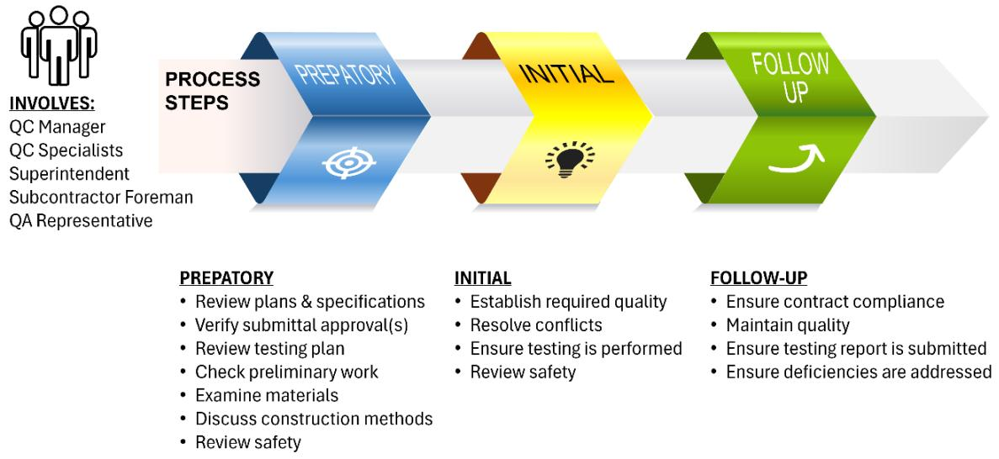
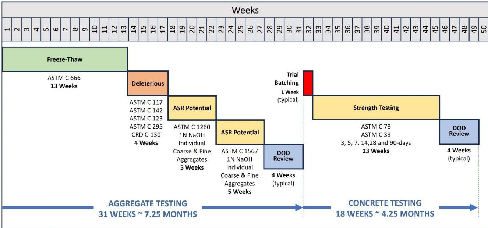

Project Management
Project management is a discipline that applies structured processes to plan, organize, execute, monitor, and close work in order to achieve specific objectives while balancing constraints such as scope, schedule, cost, and quality. It follows a recognized life cycle comprising initiation, planning, execution, monitoring and control, and closure phases [1]. The practice involves coordinating multiple activities and stakeholders through systematic mechanisms including defining scope, developing schedules, allocating resources, identifying risks, and ensuring quality assurance [1] [3]. Effective communication and integration among specialized teams are essential for delivering projects reliably by ensuring that decisions in one area consider impacts on others [3]. Core mechanisms also include comprehensive document review, equipment verification, and continuous inspection to verify compliance with specifications and support schedule integrity [2].
Sources (3)
Key findings
- The report demonstrated that successful airport concrete pavement management relies on four inter-related pillars: RPR authority for interpretation, qualified consultant selection, high-quality contract documents, and early procurement planning [1].
- The study found that selecting a consultant with proven airfield concrete experience is essential because firm reputation and individual expertise drive the quality of contract documents, scope definition, and QA expectations [1].
- The report showed that clear, high-quality contract documents and well-defined scopes reduce risk, bid inflation, and disputes by aligning all parties on QA/QC expectations, safety, phasing, and material availability [1].
- The analysis revealed that early procurement planning, including local materials expertise, realistic mix design schedules, disciplined equipment maintenance, and comprehensive safety plans, prevents schedule slips and cost overruns [1].
- The report concluded that effective project management for partial-depth repairs requires verifying all critical project documents before construction starts to align work with design intent, regulatory mandates, and site-safety needs [2].
- The study observed that maintaining continuous, collaborative review of documentation, scope, procedures, materials, and specifications throughout the job eliminates field misunderstandings between agency and contractor teams [2].
- The report demonstrated that qualified construction inspectors must perform rigorous, activity-based inspections using structured checklists to ensure each installation meets performance criteria [2].
Project Management Frameworks & Processes
Project management applies structured processes to plan, execute, monitor, and close work while balancing constraints such as scope, schedule, cost, and quality [1]. These efforts follow a recognized life cycle that includes initiation, planning, execution, monitoring and control, and closure phases [1].
Research problem — Airport concrete pavement projects face significant risks due to an overreliance on inspection as the sole quality-assurance mechanism, which fails to ensure specifications are met without a clearly defined scope and integrated management system [1]. The absence of well-defined project scopes and stakeholder roles leads to poor contract documents that increase contractor risk, bid prices, disputes, and rework, particularly under challenging delivery conditions such as tight schedules and labor shortages [1].
The following figure illustrates common quality defects such as bug holes that can result from inadequate inspection and management.
Examples of “bug holes” in a concrete pavement surface. [1]
The image displays a close-up view of a gray concrete surface characterized by numerous small, shallow depressions and pitting consistent with bug holes.
State of the art — Project management frameworks are increasingly anchored by performance-based specifications that define requirements from material selection to surface tolerances, supported by rigorous quality assurance and control regulations [1]. Current practice emphasizes early structured coordination through pre-design and pre-construction conferences to align scope, schedule, safety, and QA/QC expectations among all stakeholders before work begins [1]. The field is shifting toward digital quality-control platforms that enable real-time data capture and instant sharing among contractors, owners, and regulators to reduce errors and enhance auditability [1].
The following figure illustrates how these quality assurance and control activities are integrated throughout the project lifecycle.
 Integration of contractor QC and process control activities with QA and acceptance. [1]
Integration of contractor QC and process control activities with QA and acceptance. [1]
The figure illustrates a linear workflow for pavement construction that integrates quality control (QC) and quality assurance (QA) through four distinct phases: Pave, Testing & Inspection, Success Evaluation, and Acceptance. The process flow demonstrates how data-driven analytics inform corrective actions during the execution phase to ensure the final product meets specified quality parameters before being delivered and paid for.
Findings from the reports
- Poor procurement planning, such as selecting an architectural-engineering firm without airport pavement expertise or reusing material approvals from previous projects, produced non-conforming concrete that caused schedule delays and monetary penalties [1].
- Realistic start-up timelines are pivotal because aggregate and mixture design approval dominates the critical path, often consuming five to seven months, while testing and agency review can extend from six months up to a year [1].
- The Resident Project Representative (RPR) holds the ultimate authority to interpret FAA project requirements and can use engineering judgment to accept work that closely meets specifications, while the Sponsor retains final acceptance power [1].
- Selecting a qualified consultant team with proven airfield concrete experience is essential because firm reputation and individual expertise drive the quality of contract documents, scope definition, and QA expectations [1].
- Clear, high-quality contract documents and well-defined scopes reduce risk, bid inflation, and disputes by aligning all parties on quality assurance and control expectations [1].
- Pre-paving conferences promote quality by ensuring all parties are aligned on quality assurance/quality control expectations, safety, phasing, and material availability [1].
- Early procurement planning that includes local materials expertise, realistic start-up schedules for mix design approval, disciplined equipment maintenance, and comprehensive safety and communication plans prevents schedule slips and cost overruns [1].
Novelty & rigor — The research introduces a universal, self-assessment checklist that shifts quality control responsibility from external bodies to the contractor’s internal decision-making processes [1]. It establishes a proactive project management model by mandating early stakeholder conferences and embedding local materials specialists into acquisition planning teams [1]. The approach is reproducible through the implementation of an expanded eight-step Deming cycle aligned with specific federal and military project control specifications [1].
The following figure illustrates how activities and personnel are integrated across the three phases of this project control model.

Three phases of project control: preparatory, initial, and follow-up. [1]The figure illustrates a structured workflow divided into three sequential stages labeled Preparatory, Initial, and Follow Up, each represented by a distinct colored chevron arrow.
Reported values
| Parameter | Value | Context | Source |
|---|---|---|---|
| aggregate approval time (DOD) | 7.25 months | time for DOD to approve aggregates | [1] |
| aggregate approval time (general) | 5 months | timeline when contractor takes on risks | [1] |
| concrete mixture design age limit | 180 days | submitted concrete mixture design | [1] |
| DOD aggregate approval timeline | 7.25 months | DOD to approve aggregates | [1] |
| FAA Form 7460 submission lead time | 45 days | submission before start date of proposed construction or alteration | [1] |
| local material search radius | 200-mile | evaluation of materials available from the local area | [1] |
| minimum bidding duration | 45 days | recommended minimum for bidding | [1] |
| mixture design submission lead time | 30 days | submission to the RPR prior to start of construction | [1] |
| project timeline when contractor takes risks | about 5 months | contractor takes on those risks | [1] |
| RPR experience requirement (contracts) | 5 years | experience on projects for RPR or QA manager/administrator function | [1] |
| RPR experience requirement (supervised) | 36 months | continuous supervised experience for RPR or QA manager/administrator function | [1] |
Implications — Project managers should empower qualified representatives to interpret requirements and accept work using engineering judgment rather than waiting for external sign-off, while documenting these decisions to balance operational efficiency with oversight [1]. Contracts must explicitly define the scope, schedule, deliverables, and division of responsibility among all parties to prevent vague scopes that lead to disputes and change orders [1]. Frameworks should mandate early coordination conferences and realistic schedule buffers for material approvals and weather to align expectations on quality assurance and construction phasing before work begins [1].
The following figure illustrates a conservative timeline for mixture and materials approval in a DOD airport concrete paving project.

Conservative timeline for mixture and materials approval for DOD airport concrete paving project. [1]The figure displays a Gantt chart illustrating the sequential schedule of aggregate testing, trial batching, and concrete strength testing over a period of fifty weeks. It visually demonstrates how specific material approvals act as critical path constraints that dictate the start time for subsequent construction phases. The timeline highlights that conservative estimates for these material approvals can extend to 7.25 months, emphasizing the need for realistic schedule buffers in project planning.
Limitations — Project management authority rests with a designated representative rather than the governing agency, which limits external oversight to safety and reimbursement reviews [1]. Key quality-enhancing practices are recommended but not mandated, meaning their implementation relies on voluntary adoption rather than strict requirement [1]. Material procurement presents a chronic risk due to the unique nature of federal agency specifications and limited local availability, which can lead to schedule delays or compromised quality [1].
Evidence: 1 report (1 primary)
Coordination & Documentation Strategies
Research problem — Specialized departments often operate in isolation without communicating how their individual choices impact one another, leading to fragmented decision-making and designs that lack maintainability [3]. Insufficient pre-construction coordination occurs when stakeholders fail to jointly review documentation, scope, and procedures before work begins, resulting in field misunderstandings and rework [2]. The routine omission of systematic reviews for key documents such as specifications and traffic-control plans exposes projects to non-compliance, safety risks, and costly changes [2].
State of the art — Modern project management has shifted from single-engineer oversight to a network of specialized departments requiring continuous coordination to manage evolving materials and techniques [3]. An integrated, cross-disciplinary approach is now the prevailing model for ensuring that all participants understand how their decisions impact other stages of the project lifecycle [3]. Best practices emphasize disciplined, joint pre-construction document reviews involving both agency and contractor teams to verify compliance with technical, regulatory, and safety standards before work begins [2].
Findings from the reports
- Verified critical project documents before construction start to align work with design intent, regulatory mandates, and site-safety needs [2].
- Maintained continuous collaborative review of documentation, scope, procedures, materials, and specifications throughout the job to eliminate field misunderstandings [2].
- Performed rigorous activity-based inspections using structured checklists to ensure installations met performance criteria [2].
Novelty & rigor — The approach introduces a mandatory, continuous joint review process where agency and contractor personnel collaboratively examine all project facets from the early stages through to completion [2]. Reproducibility is achieved by requiring the assembly of comprehensive core documentation prior to execution and maintaining ongoing collaborative oversight to prevent field misunderstandings [2].
Implications — Project managers must institutionalize mandatory joint reviews of all documentation, scope, and specifications between agency and contractor teams prior to the commencement of construction activities [2]. Implementation requires formal equipment inspections before work begins and systematic activity-based inspections throughout each construction phase to align design intent with execution and prevent costly rework [2].
Evidence: 2 reports (1 primary)
Related concepts
In this hierarchy
- Parent: Quality Assurance
- Sibling: Quality Assurance
- Sibling: Quality Control
Related by shared evidence
- Aggregate Management — shares 3 reports
- Cement Chemistry — shares 3 reports
- Cementitious Materials — shares 3 reports
- Concrete Mixture Design — shares 3 reports
- Concrete Production — shares 3 reports
- Concrete Strength — shares 3 reports
- Concrete Testing — shares 3 reports
- Cracking Mitigation — shares 3 reports
Similar topics
- Quality Assurance
- Mixture Management
- Quality Control
- Pavement Assessment
- Paving Operations
- Quality Assurance
- Pavement Maintenance
- Concrete Strength
Source coverage
| Source | Project Management Frameworks & Processes | Coordination & Documentation Strategies |
|---|---|---|
| [1] | ✓ | |
| [2] | ✓ | |
| [3] | ✓ |
References
- Best Practices Manual: Quality Control and Quality Acceptance of Concrete Airport Pavement (2025)
- Concrete Pavement Preservation Guide (Third Edition) (2022)
- Integrated Materials and Construction Practices for Concrete Pavement: A STATE-OF-THE-PRACTICE MANUAL (2019)
Feedback on this page